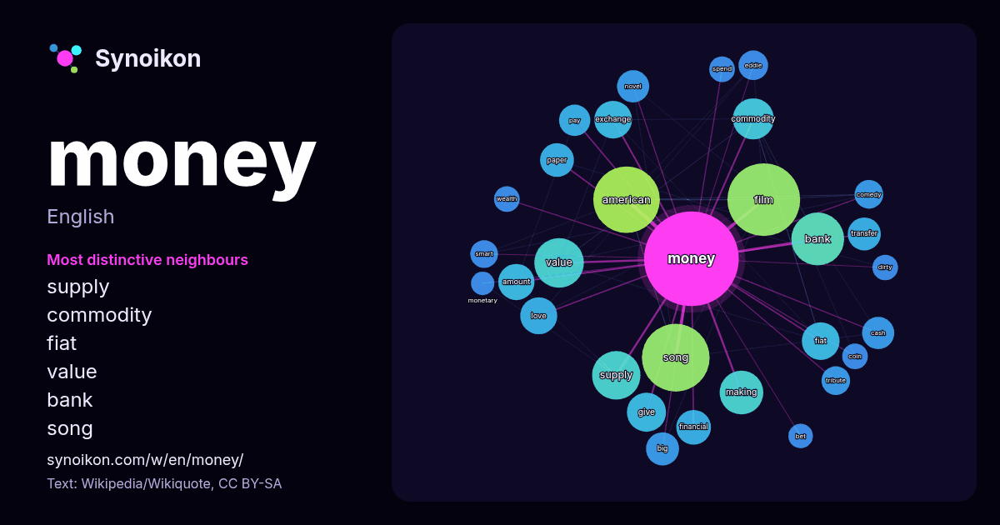

English · popular word
money
The words found around it in 1852 instances from Wikipedia, Wikiquote, Hacker News.

Most distinctive neighbours
- supply 31×
- commodity 30×
- fiat 26×
- value 25×
- bank 22×
- song 21×
- exchange 18×
- cash 17×
- amount 16×
- eddie 15×
- making 15×
- paper 14×
- transfer 14×
- give 14×
- american 14×
- tribute 14×
- smart 14×
- film 13×
- financial 13×
- pay 13×
× = how many times more often than in general Wikipedia text.
Most frequent neighbours
- film 97
- song 84
- american 81
- bank 51
- value 45
- supply 43
- making 35
- commodity 31
- give 28
- exchange 26
- fiat 26
- album 25
- love 25
- amount 24
- financial 22
- market 21
- paper 21
- big 20
- company 20
- states 20
In context
- Money is any item or verifiable record that is generally accepted as payment for goods and services and repayment of debts, such as taxes, in a particular Wikipedia snippets · Money
- "Money, Money, Money" is a song recorded by Swedish pop music group ABBA, written by Benny Andersson and Björn Ulvaeus with Anni-Frid Lyngstad singing Wikipedia snippets · Money, Money, Money
- Money Money is a 1994 Indian Telugu-language comedy film written and directed by Siva Nageswara Rao and produced by Ram Gopal Varma under his banner, Wikipedia snippets · Money Money (film)
- States), a money bill or supply bill is a bill that solely concerns taxation or government spending (also known as appropriation of money), as opposed Wikipedia snippets · Money bill
- Money Money may refer to: "Money Money" (RBD song) "Money, Money", a 2002 song by Bone Thugs-n-Harmony "Money Money", a 2021 song by Roxen, DMNDS and Wikipedia snippets · Money Money
- Sapna Money Money (lit. 'Our Dream is [only] Money and Money') is a 2006 Indian Hindi-language comedy film directed by Sangeeth Sivan. Apna Sapna Money Mone … Wikipedia snippets · Apna Sapna Money Money
- John William Money (8 July 1921 – 7 July 2006) was a New Zealand American psychologist, sexologist and professor at Johns Hopkins University known for Wikipedia snippets · John Money
- Blood money may refer to: Blood money (restitution), money paid to the family of a murder victim Wikipedia snippets · Blood money
More words
- art
- autumn
- bell
- bread
- bridge
- cat
- city
- climate
- clock
- death
- desert
- dog
- family
- food
- forest
- garden
- god
- gold
- health
- heart
- history
- honey
- horse
- island
- language
- life
- map
- mirror
- mother
- mountain
- nature
- power
- rain
- road
- salt
- science
- shadow
- silence
- song
- star
- storm
- summer
- tea
- time
- train
- truth
- water
- winter
- work
Precomputed on 2026-10-09 with default settings (±5 words, medium corpus). The interactive map can refresh it with live data.